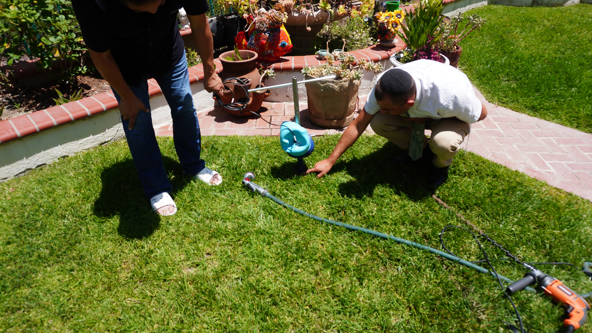
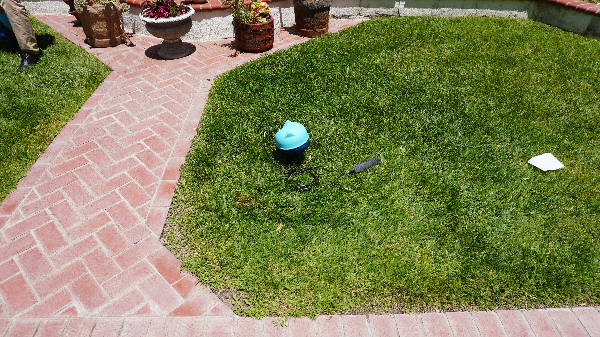
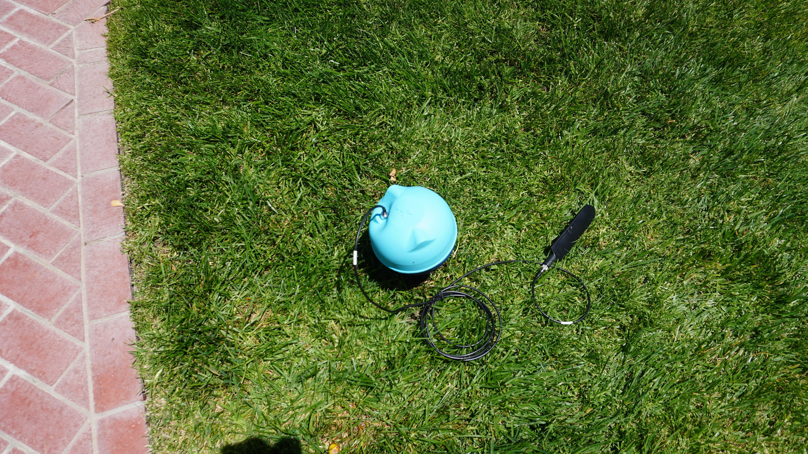

Category: Field Updates | Tags: soil health, water conservation, CropX, San Clemente, lawn care, smart irrigation
At ArableOne, we have always believed that healthier soil leads to healthier plants, smarter water use, and more resilient landscapes. We have seen it firsthand in lawns, gardens, citrus trees, flowers, and residential properties across Southern California. But belief alone is not data — and data is what moves the needle.
That is why we are excited to share that ArableOne has partnered with CropX, a leading agricultural technology company, to deploy professional-grade soil moisture monitoring as we prepare for an upcoming lawn and soil health trial in the City of San Clemente.

One of the most important — and often overlooked — indicators of lawn and landscape health is what is happening beneath the surface. Soil moisture levels affect everything: how well roots absorb nutrients, how efficiently irrigation water penetrates the soil, and how resilient a lawn is during periods of heat or drought.
In Southern California, where water conservation is not just a priority but a responsibility, understanding soil moisture at a granular level is essential. Too much water is wasteful and can promote shallow roots and disease. Too little stresses the plant. The goal is precision — and that requires measurement, not guesswork.
By deploying CropX monitoring technology before and during our San Clemente trial, ArableOne can establish reliable baseline soil moisture data and track changes over time as our product is applied. This gives us — and our clients — a clear, objective picture of what is actually happening in the soil.

CropX provides precision soil sensing systems used by agricultural operations, turf managers, and municipalities around the world. Their sensors are designed to measure real-time conditions beneath the soil surface, offering insight into moisture distribution and helping property managers make smarter, more efficient irrigation decisions.
For our San Clemente trial, CropX sensors have been installed directly in the lawn area to capture ongoing soil moisture readings at multiple depths. This data will be tracked before ArableOne treatment begins, establishing a clear baseline, and will continue to be monitored throughout the trial to document any measurable changes in moisture retention and soil behavior.
The San Clemente field trial is still in its early stages, and we are being intentional about letting the data speak for itself. That said, here is what we are looking to learn:
Baseline soil conditions. What are the existing moisture levels, and how does the soil currently hold and distribute water? This pre-treatment data is the foundation of everything that follows.
Changes in water retention. One of the areas where ArableOne may support healthier soil is in its ability to improve how soil retains and distributes moisture. The CropX readings will help us understand if, and to what degree, this occurs over time.
Root system health. Improved soil moisture dynamics can support stronger, deeper root development. Healthier roots mean more drought-tolerant turf and less reliance on frequent irrigation cycles.
Irrigation efficiency. For homeowners, municipalities, golf courses, and commercial property managers, irrigation is one of the largest ongoing costs and water-use factors. A soil amendment that supports better moisture retention could translate into measurable water savings — and that is a meaningful outcome for Southern California.

This trial does not happen in a vacuum. ArableOne has already documented compelling visual results across a wide range of applications — greener, more resilient lawns; improved flowering in garden beds; healthier citrus trees; and stronger growth in residential landscapes throughout Southern California. Homeowners and landscapers who have used ArableOne consistently report that their properties look better and their plants respond more vigorously.
What this trial adds is the next layer: measurable, scientific data that goes beneath the surface and quantifies what ArableOne is doing at the soil level. Visual results build confidence. Soil data builds understanding.
If you manage a lawn, a landscape, or a large turf area, the question of soil moisture is not just academic — it is practical and financial. Consider who stands to benefit most from smarter soil management:
Homeowners in Southern California dealing with water restrictions, drought stress, and high irrigation bills. A healthier soil profile means your lawn works harder on less water.
Municipalities and public works departments responsible for parks, medians, and green spaces. Reducing irrigation demand while maintaining turf quality is a budget and sustainability win.
Landscapers and lawn care professionals who want to deliver better results for clients while differentiating their services with proven, data-backed products.
Golf courses and sports turf managers where consistent turf quality and efficient water use are both performance and operational priorities.
Commercial property managers overseeing large irrigated areas who are looking to reduce costs, meet sustainability goals, and maintain curb appeal.
This collaboration with CropX represents exactly the kind of rigorous, transparent approach ArableOne is committed to as we continue to grow and validate our impact. We are not here to make claims we cannot support. We are here to do the work — on the ground, in the soil — and let the results guide the conversation.
The San Clemente trial is just beginning, and we look forward to sharing what we learn. Stay tuned to the ArableOne blog for updates on soil moisture readings, visual observations from the field, and what the data tells us about how ArableOne can support healthier, more efficient landscapes across Southern California.
Ready to learn more?
To learn more about how ArableOne supports healthier soil, stronger roots, and smarter water use, visit ArableOne.com — and explore our Lawn Recovery resources if your turf needs a fresh start.
Visit ArableOne.com Lawn Recovery Shop ArableOne